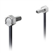
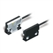
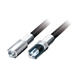
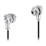
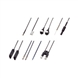

Building Automation
Industrial Automation
Power Automation & Safety


Bangladesh Distributor
- Home
- Products
- Contact Us
Fiber Units
Fiber Units, a wide variation of shapes, enviroment-resistives and special-beams, can meet your needs with Amplifier Units.
Fiber Units List
There are 5 products of Fiber Units.
 Hex-shaped Fiber Unit E32-LT11N / LD11N / LR11NP
Fiber Units with Build-in Lenses provide more stable detection and simpler, more reliable installation.
 Fiber Unit Build-in Lens Series, Flat Model E32-LT35Z
Optical Axis Adjustment in 20 Sec and Ultra-high-power Beam Greatly Reduce Installation and Maintenance Work
 Fiber Unit Build-in Lens Series E32-LT / LD
High-power, Stable Detection. Is the Standard for the Future!
 Oil-resistant Fiber Unit E32-T11NF
Fiber Units for Reliable, Stable Operation in Cutting Oil Environments
 Fiber Sensors E32 Series
OMRON's Fiber Sensors continue to support an increasing range of applications.
Related Contents
- Fiber Sensors
© Copyright OMRON Corporation 2007 - 2016. All Rights Reserved.